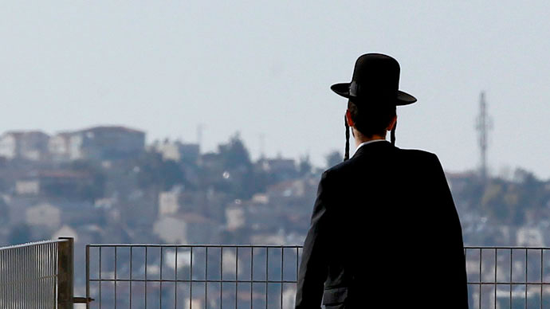

Как я баллотировалась в Кнессет
«Добрый вечер, меня зовут Ксения Светлова, и я баллотируюсь в Кнессет от партии "Сионистский лагерь"».
Я всего лишь ответила на звонок, поступивший на мой мобильный телефон с неопознанного номера, и вдруг услышала свой собственный голос. Прямо как в «Простоквашино» – «Вашу маму и тут, и там показывают». За несколько дней до парламентских выборов в Израиле многие политические партии записывают аудиообращение к избирателям, а потом активно спамят этим обращением по телефону. Вот и я «позвонила» значительному количеству воих знакомых, самой себе, а также десяткам тысяч русскоязычных израильтян.
Хитрые машины знают про нас все, в том числе – смотрим ли мы «Иронию судьбы» 31 декабря и покупаем ли своим детям плюшевого Чебурашку на его далекой апельсинной родине. «А вдруг именно это обращение на русском языке заставит избирателя изменить свое мнение о нашей партии? А что, если сам премьер-министр позвонит и чувственно попросит отдать ему твой голос?», – думают пиар-менеджеры и партийные стратеги.
Возможно, все это меня так забавляет, потому что это мои первые выборы. На протяжении 13 лет я работала тележурналистом, освещала палестинскую интифаду, «кедровую революцию» и «Арабскую весну». Сотрудничала с многими израильскими, американскими, британскими и российскими изданиями, в том числе и со Slon Magazine. Это была самая лучшая и интересная в мире работа – в университете я изучала историю Ближнего Востока, арабский язык и журналистику, детское увлечение Востоком и международной журналистикой переросло в карьеру.
СПРАВКА: Досрочные выборы 20-го созыва Кнессета прошли 17 марта 2015 года. Первое место, по предварительным результатам голосования, заняла партия «Ликуд» (23,26% голосов избирателей и 30 мест в парламенте) действующего премьер-министра Биньямина Нетаньяху, второе – «Сионистский лагерь» Ципи Ливни (18,73% и 24 места). Этот альянс был образован в декабре прошлого года как левоцетристский союз партий «Авода» и «Ха-Тнуа». «Сионистский лагерь», например, выступил против закона, предложенного «Ликудом», согласно которому арабский язык должен лишиться статуса государственного. Помимо «Ликуда» и блока Ливни, в Кнессет на этот раз прошли также партии «Наш дом Израиль», «Еш атид», «Байт Иегуди», шедшие общим списком ХАДАШ, РААМ, БАЛАД, ТААЛ и другие.
Арабская политика была интересной, но чужой, на нее можно было смотреть через аналитическую призму, не будучи вовлеченной эмоционально. Ливан хоть и близко – но все же где-то там, за бугром. Израильский Кнессет – в 25 минутах от моего дома. Израильская политика частенько разочаровывала, преподносила неприятные сюрпризы: совершались необдуманные шаги, такие как одностороннее размежевание с Газой – еще до его реализации мне казалось, что любой односторонний шаг в нашем неспокойном регионе непременно обречен на провал, к власти с завидной очередностью приходили непрофессионалы, самодуры, мошенники или просто неприятные люди.
Как же было приятно и легко наблюдать за всей этой кашей с уютного дивана, лениво переключая каналы и цедя сквозь зубы «вот же лузеры». Редкое правительство могло продержаться у власти полные четыре года, последние выборы состоялись всего 2 года назад.
Наверное, так можно было продолжать и далее. Но стремительно ухудшающееся положение Израиля на международной арене, а также бедственное положение, в котором находятся миллионы моих соотечественников, подтолкнули меня к моей будущей карьере. На протяжении шести последних лет у власти в Израиле находится партия «Ликуд» во главе с Биньямином Нетаньяху. Это партия правого толка, большинство сторонников которой верят в сильную руку, считают, что если палестинцам уступить палец, они сразу же откусят тебе голову, и готовы терпеть экономические невзгоды во имя магических слов «безопасность Израиля».
Когда Нетаньяху – премьер-министр и лидер «Ликуда» – говорит приятным баритоном о том, что бедные дети и старики – это ужасно, но иранская угроза еще страшнее, – многие израильтяне, как сторонники «Ликуда» так и те, кто голосуют за другие партии – правые или центристские, – поворачиваются как зачарованные и маршем отправляются на избирательные участки с правильными бюллетенями.
Возможно, я просто равнодушна к баритонам. В общем, магическое заклинание «иранская угроза» не действует на меня так, как на многих моих друзей. Я все же думаю в этот момент о земном – о своей маме и о тысячах других русскоязычных израильтян, которые получают мизерную пенсию, об увеличивающемся разрыве между богатым и бедными в Израиле, о своих близких друзьях, которые уезжают в Канаду либо потому что не могут свести концы с концами, либо из-за соображений безопасности. Именно поэтому я являюсь частью другого, левоцентристского лагеря, который выступает за урегулирование палестино-израильского конфликта и создание палестинского государства, считает израильских арабов равноценными гражданами Израиля, а не «пятой колонной», на которую периодически стоит натравливать избирателей, и четко осознает, чем грозит стране стремительное обнищание ее граждан.
Фото Василия Шишкина (http://bbc.com)